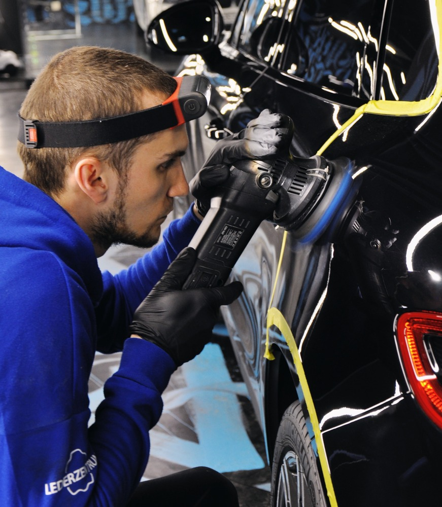

Комплексная мойка
В комплекс входят:
трехфазная мойка кузова;
сухая уборка салона и багажника с использованием пылесоса;
мойка и очистка ковриков салона;
обработка пластика салона;
кондиционирование кожаных поверхностей;
чистка колесных дисков. Она осуществляется специальными средствами, удаляющими любые виды загрязнений и восстанавливающими первоначальный вид без повреждения лака и краски;
чернение резины.